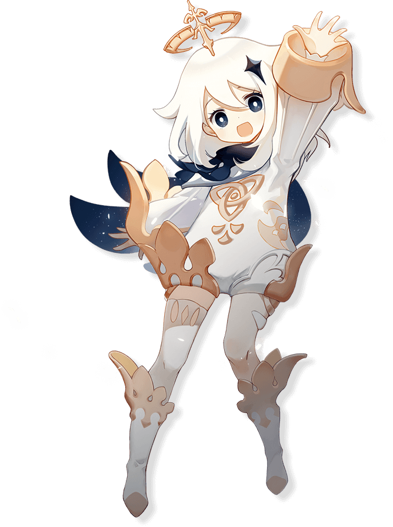

Paimon es un personaje no jugable en Genshin Impact y acompaña al Viajero a lo largo de su aventura en Teyvat como su guía. Conoció al Viajero al ser sacada de un lago en el que menciona que se habría ahogado si no la hubieran sacado. Actualmente representa a Genshin Impact y está en la aplicación Genshin Impact, el sitio web, Twitter y los íconos de las redes sociales.
Paimon es burbujeante, extrovertido, pero casi demasiado honesto, algo ingenuo y, en ocasiones, se muestra grosero. Ella deja en claro a quién favorece; a quién le gusta y a quién no le gusta, por ejemplo, como no le gusta Venti , lo deja muy claro al llamarlo "bardo sordo". Ella defiende lo que piensa y lo deja bastante claro. Tiende a referirse a sí misma desde el punto de vista de la tercera persona
Le encanta comer; a pesar de su pequeño tamaño, puede devorar grandes cantidades de comida antes de sentirse llena. También conoce bien la historia que hay detrás de muchos platos. Si bien disfruta de los productos de limo, también afirma que su peor pesadilla es ser devorada por un limo particularmente grande.
Paimon tiene un cuerpo pequeño, lo que le da el aspecto de un hada. Tiene el pelo blanco y espeso recortado justo por encima de los hombros, ojos morados oscuros y piel clara.
Lleva un jersey blanco de manga larga y una capa azul noche salpicada de estrellas, y medias blancas con botas blancas. Bordados y formas de oro rosa están unidos a su jersey, botas y mangas.
Los accesorios de Paimon son una horquilla de color púrpura oscuro, casi negra, y una corona de oro rosa que levita sobre su cabeza como si fuera un halo.